Cat
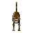
| Config name | growncat_browngrey |
| NPC id | 772 |
| Combat level | hidden |
| Options | Pick-up, Stroke, Shoo-away, Chase vermin |
| Category | petcat |
| Wander range | 5 tiles from spawn |
| Defined in | scripts/quests/quest_fluffs/configs/quest_fluffs.npc |
Cat
A fully grown feline.
Locations
This NPC is not placed on the map by the map files (it may be spawned by scripts, e.g. during quests, or be a variant).
Dialogue
Your cat has grown into a mighty feline, but it will no longer be able to chase vermin.
PlayerThat cat sure loves to be stroked.
Related NPCs (category petcat)
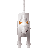
Kitten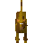
Kitten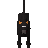
Kitten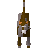
Kitten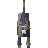
Kitten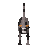
Cat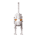
Cat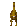
Cat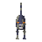
Cat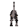
Overgrown catOvergrown cat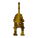
Overgrown cat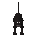
Overgrown cat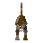
Overgrown cat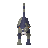
Overgrown cat